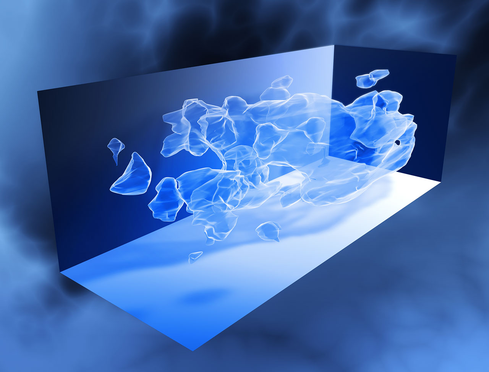

| CV | FRAMESET | SOSYAL PROJE | GRAFİK |
Yeni Bir Teori Evrenin Neden 3 Boyutlu Olduğunu Açıklıyor Olabilir |
|---|
|
boyutlu olduğuna mantıklı gibi görünen bir cevap verdi. İçinde yaşadığımız evrenin zaman'ı dahil etmezsek uzunluk, yükseklik ve genişlik olmak üzere 3 boyutlu olduğunu ve bu evrenin bir fizik kuralları silsilesi olduğunu biliyoruz. Vanderbilt Üniversitesi'nden Thomas Kephart ve uluslarası ekibi bu 3 boyutlu evreni anlamak için parçacık fiziği ile matematiksel düğüm kuramını kaynaştırarak evrene bir açıklama getirmeye çalıştı. Ancak ne varki, uzayda başka boyutların olduğunu inkar etmek zor, zira parçacık fiziğinde, kuantum mekaniği ile Einstein'in genel görelilik kuramını birleştiren Sicim teorisi, dokuz veya daha fazla boyutun araştırılması için kullanılıyor. Fizikçilerin 3 boyutu araştırmasının sebebi ise daha fazla olan boyutlara ilişkin net kanıtlar bulamamaları. Thomas Kephart ve ekibi de bu üç boyutu araştırmak için fizik dünyasında oldukça bilindik olan ve James Clerk Maxwell’in 19. yüzyıldaki elektromanyetizm modellemesine dayanan akış tüpleri adı verilen bazı fizik kanunlarıyla işe başladılar. Kephart konuyla ilgili yaptığı açıklamada meşhur akış tüpü kuramını aldıklarını ve bunu daha yüksek bir enerji seviyesine çıkardıklarını belirtti.  Akış tüplerinin oluşturduğu yapıda bulunan enerji üzerine hesap yapan araştırmacılar bunun şişme (evrenin genişlemesi) için yeterli olduğunu buldular. Yine bir açıklamayla konuya değinen Kephart, "Bu sayede akış tüpü ağımız, şişme için gereken enerjiyi sağladı ve bu durum şişmenin neden aniden yavaşladığını açıklıyor." ifadelerini kullandı. Evrenin genişlemeye başlamasıyla akış tüpü ağının dağılmaya başladığını söyleyen Thomas Kephart sonunda ise parçalara ayrılarak genişlemeye güç sağlayan enerji kaynağının ortadan kalktığını belirtti. Araştırmacılar tüplerin 3 boyutta tıkandığını ve diğer serbestlik boyutlarının başarısız olduğunu açıkladılar. Evrene dair hergün yeni bir teori geliştiriliyor. Her nekadar bu ele aldığımız teori sağlam bir model gibi görünse de sanırım evreni anlamak için daha büyük kanıtlara ihtiyacımız var. Haberin aslı:webtekno |